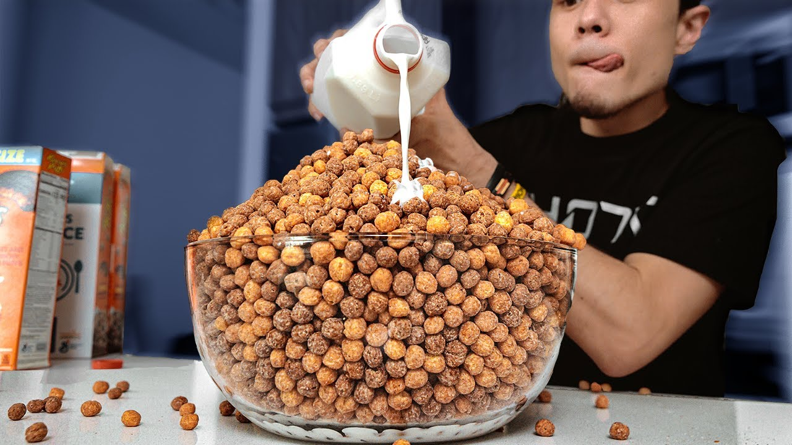

Reese's Puffs

What's that pair that packs that punch?
The unique taste so creamy with a crunch
P B and C is what I'm thinking of
And it only can be found in my Reese's Puffs
-Reese's Puffs Rap
Ingredients
- 1 cup Oat Flour
- 1 teaspoon Baking Powder
- 1/2 cup creamy Peanut Butter
- 1/4 cup Maple Syrup
- 1 Egg
- 1 tbsp melted and cooled Coconut Oil
- 1 tsp Vanilla
- 1/3 cup Cacao Powder
Instructions
- Preheat the oven to 350 degrees, and grease or line with parchment paper a
baking pan.
- In a medium bowl whisk together the wet ingredients - creamy peanut butter,
maple syrup, egg, coconut oil, and vanilla.
- Then separate the wet ingredients into two bowls. In one of the bowls, mix
in the cacao powder.
- In another medium bowl, combine the oat flour and baking powder.
- Take 1/2 cup of the dry flour mixture and add it the cacao wet mixture,
and take the other 1/2 cup of dry flour mixture and add it to the peanut
butter mixture.
- Wet hands slightly, measure out 1-2 tsp of mixture, and roll into a ball.
Place on baking tray.
- Roll all the wet mixture (PB and Cacao) into balls and place on the baking
tray. Bake for 12-15 minutes.
- Best served in a bowl, with almond milk!
Main Page